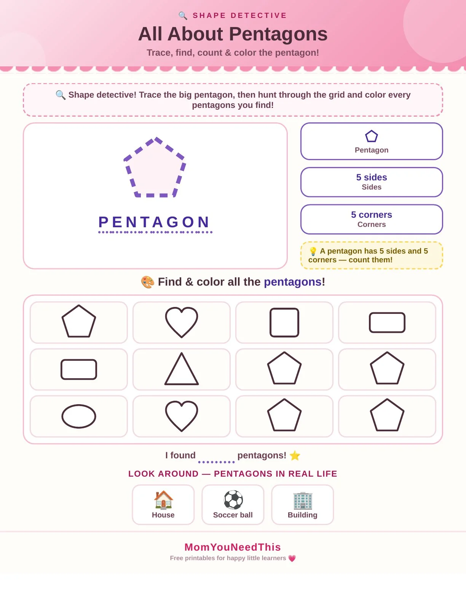

Pentagon Activities For Kids Trace, Color & Learn All About Pentagons
Help your child explore pentagons with printable activities that build shape recognition, counting 5 sides, and growing geometry vocabulary.
Quick Answer
This free printable pentagon activity is designed for toddlers and preschoolers ages 2–5. A pentagon has 5 sides and 5 corners — count them: one, two, three, four, five — and its most famous example is a building: the Pentagon in Washington, named after its own shape. The worksheet includes hands-on tracing, coloring and identification exercises that build early learning skills through play. Download and print at home with no signup needed — no account required, just print and start learning.
At a Glance
- Ages: Toddlers and preschoolers (ages 2–5)
- Activity: Learning the pentagon — 5 sides, 5 corners
- Skills: Shape recognition: pentagon
- Format: Printable worksheet (PDF)
- Cost: Free, no signup
⬟ Learn About a Pentagon
Five is where shape-counting gets serious. Triangles, squares and rectangles can be recognized at a glance, but a pentagon must be counted — which is precisely its value. This page trains the reliable method: touch each side as you count, touch each corner as you count, and let the number 5 make the identification. A shape counted carefully cannot be confused with a hexagon (6) or a square (4).
The pentagon's everyday disguises are worth knowing before the hunt: the black patches on a soccer ball are pentagons, home plate in baseball is a pentagon (a square with a point — count its sides!), and the center of a starfish carries the shape. Tracing comes first on the worksheet, and the drawing rhythm — five sides means five pencil journeys — gives the counting a physical anchor.

🖨️ Download Your Free Pentagon Printable
Trace the pentagon, color it in, and hunt for pentagons around your home. Print it out, grab the crayons, and you're ready — no signup needed.
⬇️ Download Free Printable 🖨️ Print(opens in new tab)🎁 Free printable for toddlers & preschoolers
🔍 Pentagon Hunt Around Your Home
Turn learning into a game! Pentagons are the shyest beginner shape in most houses, so this hunt goes outdoors and into the toy box: soccer balls first (count the sides of one black patch together), then starfish pictures, sand dollars, and okra slices if dinner cooperates — cut an okra pod and the cross-section is a tiny pentagon. Count how many you can find and cheer for each one.
The champion find is home plate: next time you pass a baseball diamond or watch a game, count its sides together — two parallel sides, two slanted, one point: five. And if your child ever sees a photo of the famous Pentagon building, they will be able to tell you exactly how it got its name, which is a fine party trick for a five-year-old.
💡 Why Learn About the Pentagon?
The pentagon is where shape learning becomes number learning. Below five sides, children can memorize shapes by silhouette; at five, the silhouette stops being obvious and counting becomes the tool — a genuine mathematical habit. Every pentagon activity is secretly a counting-to-five activity with a verification step: sides and corners must agree, and when they do not, you recount. That self-checking loop is early mathematical discipline.
Pentagons also open the door to the whole polygon family. A child who can count out a pentagon can count out a hexagon, an octagon, and any many-sided shape a book presents — the method generalizes even when the names get long. Add the soccer-ball and home-plate sightings, and the pentagon becomes the shape that proves math hides inside sports.
📚 Keep Exploring Shapes
Discover more free 2D shape activities, printables, and learning ideas created for busy parents.
🎁 Back to 2D Shape Activities